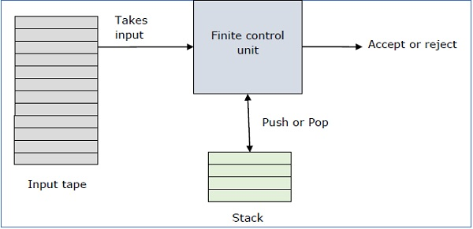

Topic
In computer science, a pushdown automaton (PDA) is a type of automaton that employs a stack. Pushdown automata are used in theories about what can be computed by machines. They are more capable than finite-state machines but less capable than Turing machines.*

Exercise
Program For PDA Which Accpets Strings Of (0^n)(1^n)\n
AcceptedRejected
